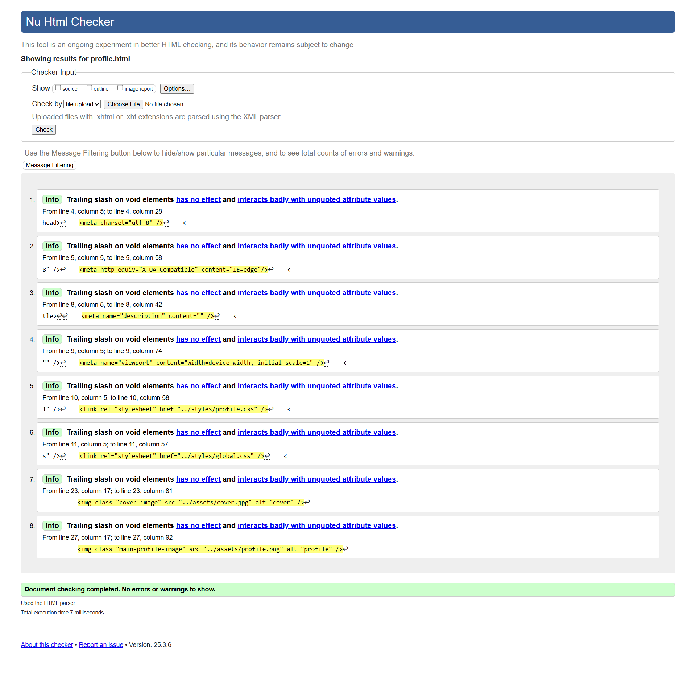
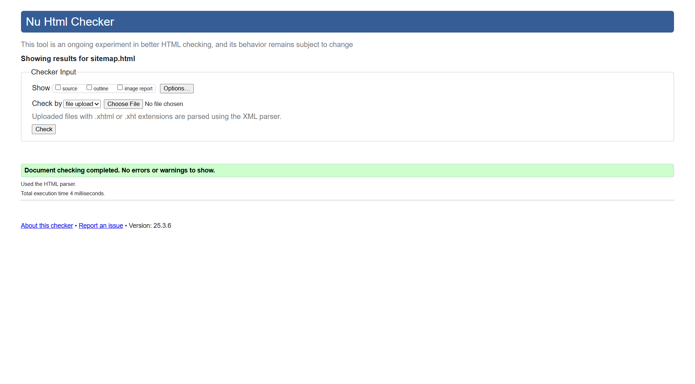

Profile Page validation report
There were a few stray tags and the language was not specified in the head section. The language was added to the head section and the stray tags were removed. Apart from that, the page was validated successfully.
Back to Page Editor page
Sitemap Page validation report
Apart from the language not being specified in the head section, the page was validated successfully.
Back to Page Editor page
Content Page validation report
The content page was validated successfully.